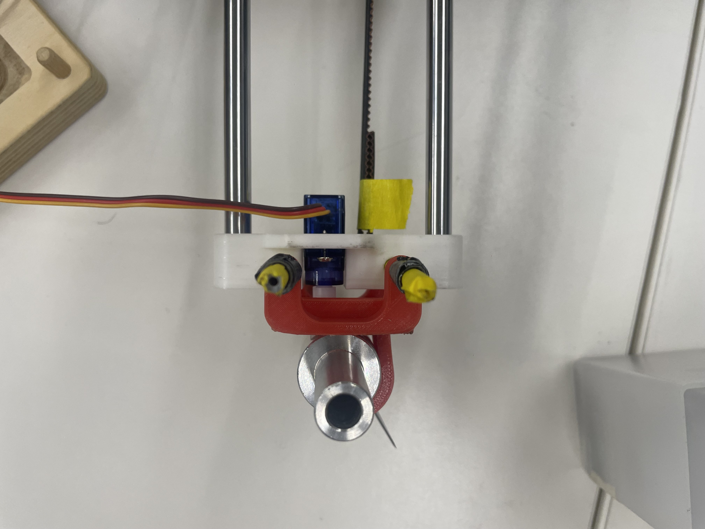
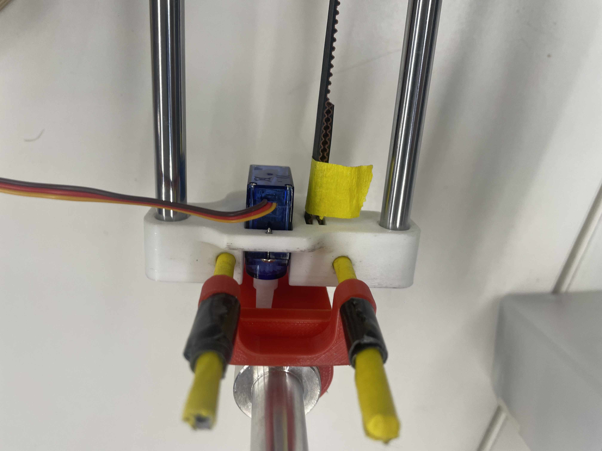
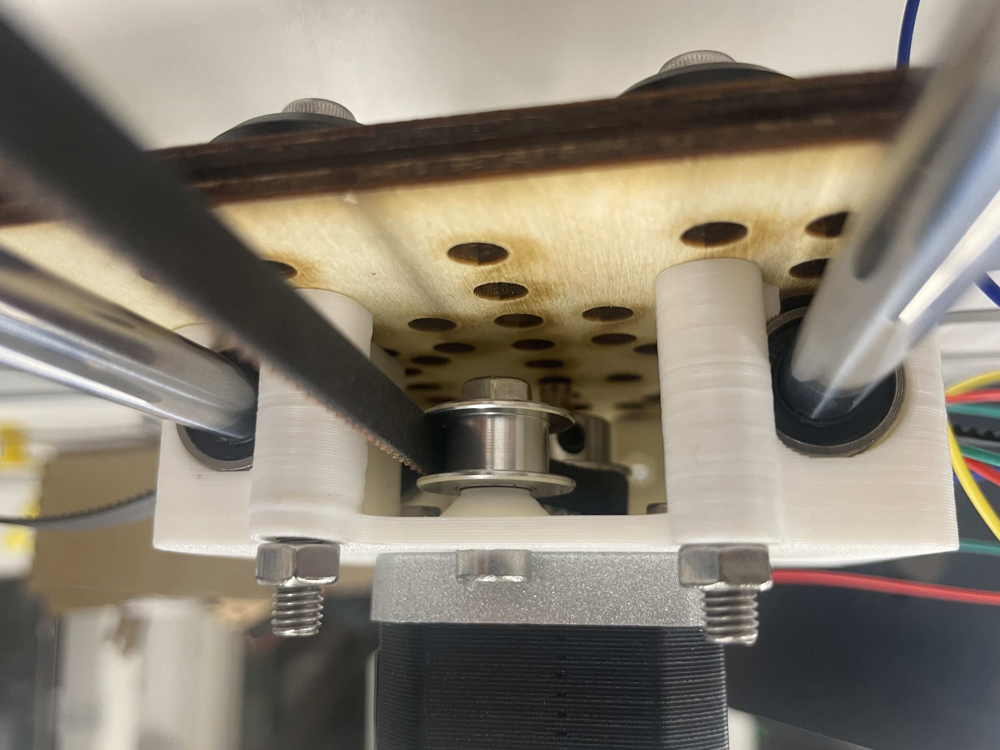
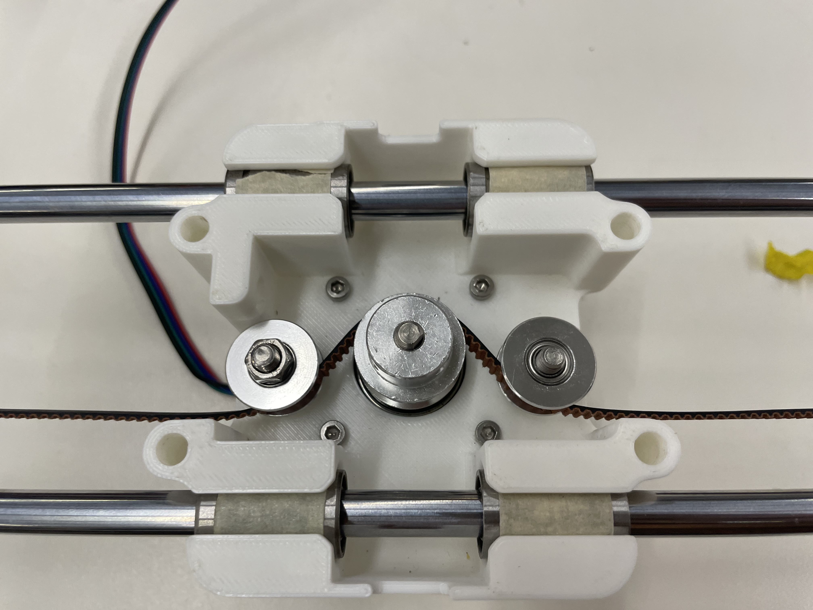
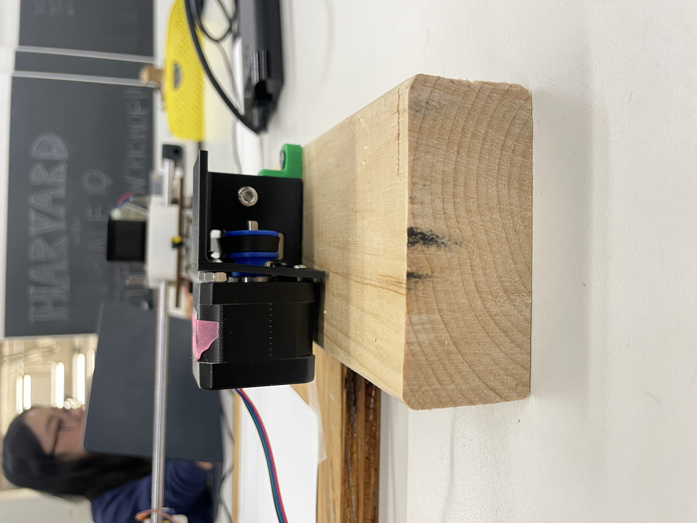
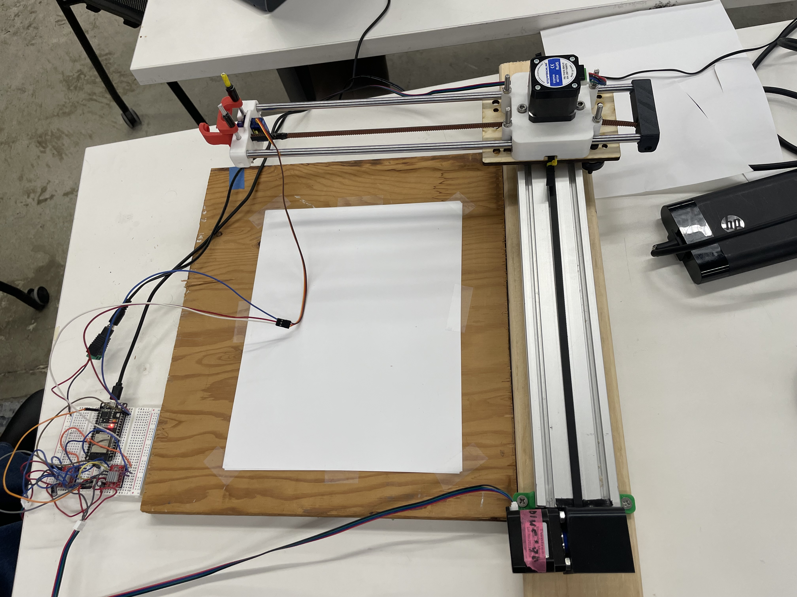

<div class="textcontainer">
<p class="margin"> </p>
<h3>Weeks 10-12: Machine Building</h3>
<h4>Assignment: Build a Drawing Robot</h4>
<h5>For this week we were assigned with the task of creating a robot similar to a drawing robot with our own touch.
We were put into teams, mine was comprised by Gardenia, Fatma, and Clyde. After brainstorming a few ideas we realized
Clyde and Fatma had come up with the same idea of a robot that could cut paper. We decided to go with that idea.
Consequently, when Nathan noticed that we were doing this he provided us with different blades to use for the robot.
And so we began to assemble the robot.
</h5>
<img width="640" height="640" src= "Special.jpg.JPG">
<h5> We mainly used Cindy's documentation which was of great help and made us realize the importance of having a good
documentation when building a machine in case anyone else wants to replicate it.
</h5>
<h5>Our first steps where to figure out the gripping mechanism and since our blade was different, we decided to
remove the triangle bases that assured the blade.
</h5>


<h5> After that we started assembling the components of the x-axis.


<h5> Once we had the x-axis assembled we started working on the y-axis.This axis proved particularly challenging
since we had to make sure the motor was aligned with the belt. Adittionally, we greatly struggled to achieve the
optimal tension for the belt. After several attempts and Bobby's help we were able to finally get it right. We used an
eccentric nut which allowed to adjust the wheeles that were in contact with the metal bar. </h5>

<img width="640" height="640" src="tension.jpg">

<h5>Before continuing, it is important to document our circuits, since those were also a very problematic component.
However, before going into the circuits, it is pertinent to mention that our team had an awful bad luck with stepper
motors since one was broken. Additionally, one of the most important lessons we learned was to unplug our circuit
when debugging or re-arranging the components. Failing to do so resulted in several fried components. With that being said,
our circuit was as follows:
</h5>
<video width="640" height="480" controls>
<source src="movementig.mp4" type="video/mp4">
</video>
<video width="640" height="480" controls>
<source src="circuits.mp4" type="video/mp4">
</video>
<h5>After having everything assembled, we stumbled upon with some code issues but after a lot of debugging and changing
some pins we were able to get the robot working.</h5>
<h5> Overall, this task was an extenuating but fun experience. We learned a lot about machine bulding and greatly
appreciated anyone's documentation since it made our lives a lot easier. Lastly, it was refreshing to work in teams
because most of the class had been individual. It was nice to have people that knew more about software and others that
knew more about hardware because we were able to solve problems much faster. Following are some videos about our robot including
when it zeroes and when it goes to 0.
</h5>
<video width="640" height="480" controls>
<source src="0.mp4" type="video/mp4">
</video>
<video width="640" height="480" controls>
<source src="circuits.mp4" type="video/mp4">
</video>
<h3>Key Takeaways</h3>
<h5>
<ul>
<li> Always document your projects properly to make others' lifes easier. </li>
<li> Always unplug everything when debugging and re-arranging the circuits. </li>
<li> Always question the integrity of a motor. </li>
<li> Double check the pins when debugging. </li>
<li> Have faith. </li>
</ul>
</h5>
</div>